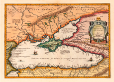
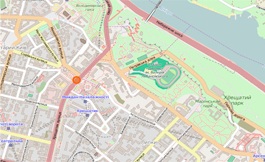
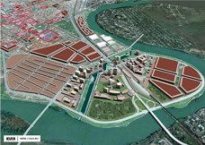

Минуле
Сучасне
Майбутнє
ХТО МИ?
Команда ентузіастів, які люблять вивчати міста, подорожувати, ділитися з іншим и своїми знаннями та враженнями.
ЩО МИ ПРОПОНУЄМО?
- Інтерактивні карти
- Перетин минулого й сучасності
- 3-D візуалізацію об’єктів
- Зручний пошук за рубриками
- Побудова цікавого маршруту та підказки просто у ваш смартфон
ЯК ДОЛУЧИТИСЯ?
- Завантажуйте власні фото
- Позначайте цікаві місця на карті
- Розкажіть про нас своїм друзям
- Підтримайте наш проект фінансово